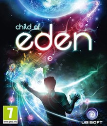

Child of Eden [a] , Q Entertainment tarafından geliştirilen ve Xbox 360 ve PlayStation 3 için Ubisoft tarafından yayınlanan2011 yapımı bir müzikal raylı nişancı oyunudur . Oyuncunun uzak gelecekteki bir virüs internetini temizleme yolculuğunun ardından, oyun, performansa dayalı puanlar ve her sahnenin müzik parçasıyla atış gruplarını senkronize etmek için verilen bonuslarla birinci şahıs bakış açısıyla çok sayıda düşmanı vurmayı içerir. Standart denetleyicilere ek olarak, her sürümdesırasıyla Kinect ve PlayStation Move aracılığıyla hareket denetimlerini kullanma seçeneği bulunur. Bu bir2001 yapımı Rez'in ruhani halefi , oyuncularda bir sinestezi duygusu yaratma amacını taşıyor .
Oyun, Q Entertainment'ın kurucusu Tetsuya Mizuguchi tarafından tasarlandı ve şirketteki son büyük projesiydi. 2008'de üretime başlayarak, Mizuguchi'nin önceki oyunlardan oyun felsefelerini taşıdı. Üretim başladıktan sonra hareket kontrolleri dahil edildi. Müzik ve ses prodüksiyonu Yuki Ichiki tarafından yönetildi ve Mizuguchi'nin ortak yarattığı bir müzik grubu olan Genki Rockets'ın yeni ve mevcut müziklerini içeriyordu. Başlık olumlu eleştiriler aldı ve ödül adaylığı gördü. Övgü, görsellerine ve hareket kontrollerinin kullanımına yöneltilirken, tekrar eden şikayetler kısa uzunluğuna odaklandı. Sonunda dünya çapında 500.000 kopya satan Ubisoft, ilk satışlarında hayal kırıklığına uğradı.